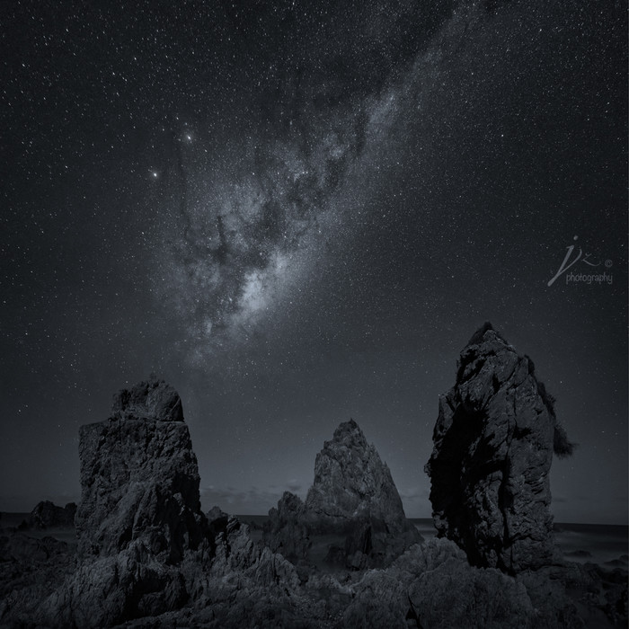
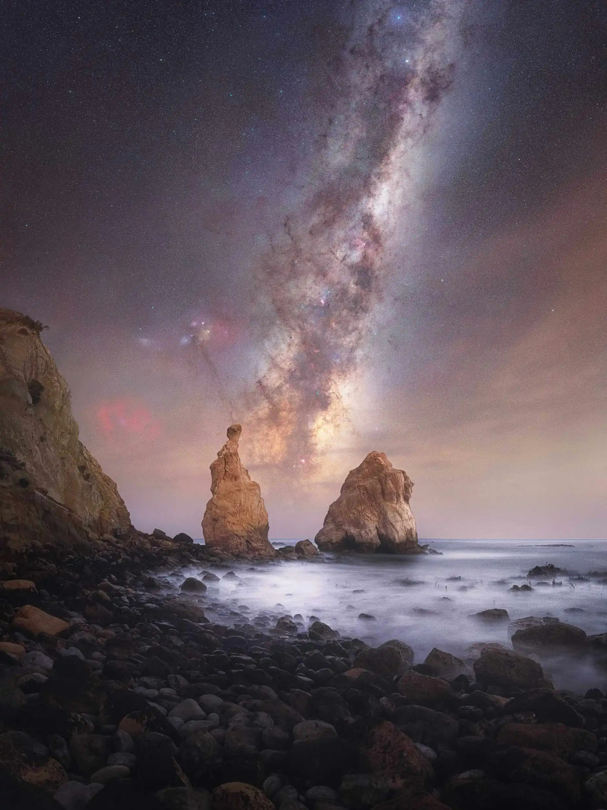

星空旋转
f/2.8
ISO 3200
30s
当城市的霓虹褪去，银河才会露出它的模样
而按下快门的瞬间，所有疲惫都被星光治愈
你不必远行，在这里就能触摸整片星空
星空摄影是摄影爱好者心中的"浪漫终极挑战"——当镜头对准浩瀚银河，繁星如碎钻般洒满夜空，那种震撼感足以让人忘记所有拍摄的艰辛。但很多新手在尝试时，常因参数设置错误、对焦不准或曝光不足而失败。
1. 时间选择：避开光污染，抓住"黄金时段"
月相影响：满月时月光过强，会掩盖星星光芒，建议选择新月前后5天（月亮亮度低于20%）。
天文季节：北半球夏季（6-8月）银河核心最清晰，冬季（12-2月）银河较暗但适合拍摄猎户座等星座。
天气条件：无云、无雾、无月光干扰的晴夜，可通过天气App（如Windy、天文通）查看云层覆盖和光污染等级。
2. 地点选择：远离城市，寻找"暗夜保护区"
光污染等级：使用光污染地图（如Light Pollution Map）选择等级≤3（蓝色区域）的地点，如山区、沙漠或海边。
前景搭配：星空照片需前景增加层次感，可选择树木、岩石、湖泊或废弃建筑作为构图元素。
3. 器材清单：相机、镜头、三脚架是核心
相机：全画幅相机（如佳能EOS R6、索尼A7M4）高感表现更优，但APS-C画幅（如佳能M6 Mark II）也可通过后期降噪处理。
镜头：广角大光圈镜头（如14-24mm F2.8、20mm F1.8）是首选，光圈越大（如F1.4），进光量越多，星空越明亮。
三脚架：必须稳固，避免风吹或按键震动导致画面模糊。
辅助工具：快门线（或手机遥控）、头灯（红光模式保护夜视）、备用电池（低温会加速电量消耗）。
相机：高感全画幅相机，相对APS画幅相机最大的优势之一就是高感画质，因为星空摄影要用到ISO3200-6400，甚至ISO12800，高感表现力对画质非常重要。
镜头：大光圈超广角镜头，星空摄影需要把地景和星空都拍摄进画面，超广角镜头视角宽阔，有利于构图。
尼康14-24mm F2.8、蔡司15mm F2.8是很好的星空摄影镜头。最近市场上新出现几个大光圈定焦广角镜头，诸如Sigma 14mm F1.8, 老蛙12mm F2.8等等，都是星空摄影的利器。当然这些镜头也有价格昂贵，畸变控制不好，太重等等弊端，还是要根据自己的情况和能力综合考虑。除了主力镜头，我也使用三洋14mm/F2.8拍摄银河，这是性价比非常高的一个大光圈广角镜头。
三脚架：星空摄影都需要长时间曝光，稳固的三脚架和球头是必须的。
头灯&手电： 为了避免光污染，星空摄影的拍摄地都在远离城市的偏远地区，在黑暗的环境中照明设备非常重要，任何时候安全第一是首要原则。这是常常被掉以轻心的附件，由于不够重视我也有过极为深刻的教训。一次拍摄中我和同伴的头灯都没电了，而且手机所剩电量无几，在伸手不见五指的国家公园中依靠手机微弱的光亮摸黑走出来。自此之后每次外拍，我一定会把两个头灯装在包中，同时带上备用电池。头灯和手电的另一作用就是给前景补光，并有助于对焦。

董书畅是中国新生代天文与风光摄影师，其作品以科学性与艺术性的结合著称。他凭借日环食作品《The Golden Ring》摘得2021年格林威治皇家天文台年度天文摄影师大赛全球总冠军及太阳组冠军，成为该赛事最年轻的中国籍总冠军。此外，他在2019年以《天地共舞》获得同一赛事最佳新人组冠军，并多次入围国内外摄影赛事。董书畅的非科班出身背景和自学经历（大学主修物流管理）为其创作增添了独特视角。他长期致力于极端环境下的拍摄实践，如西藏阿里地区的日环食记录、喜马拉雅山脉的"红色精灵"闪电群捕捉等，其作品被《中国国家地理》等权威媒体采用。
近日，第八届"年度银河摄影师"大赛揭晓入围作品，来自全球的25幅星空摄影佳作震撼亮相。从奥地利雪山冰屋到国际空间站舷窗，从智利仙人掌荒漠到也门秘境岛屿，这些跨越地理界限的影像不仅展现了银河系的壮丽，更记录了彗星、流星雨等天象奇观，为观众呈现了一场视觉盛宴。
在奥地利多布拉奇山脉，摄影师乌罗什·芬克耗时三小时守候在零下冰屋，最终捕捉到银河核心与木星、火星同框的奇幻画面。积雪覆盖的小木屋在星辉映照下，宛如童话场景。而在美国内华达山脉东麓，摄影师迈克·阿布拉米安将银河与英仙座流星雨定格于同一画面，夜空中划过的数道流星轨迹为静态星野注入动感。
